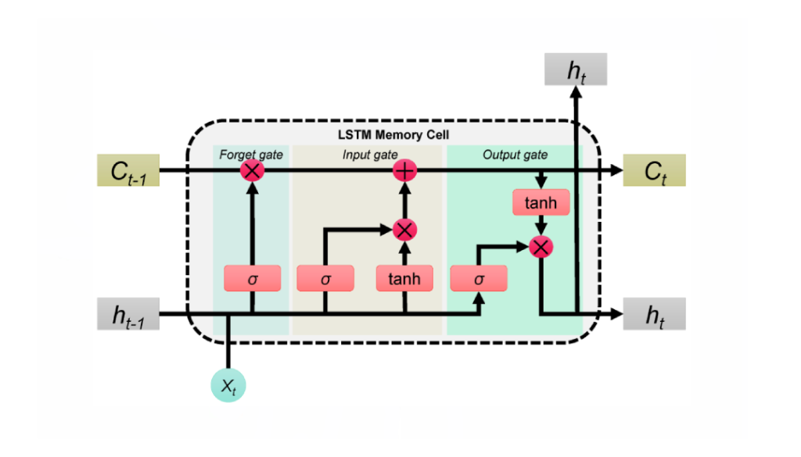
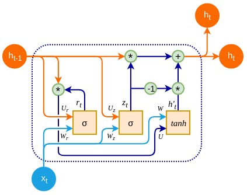

RNN은 순서가 있는 데이터를 처리하기 위해 이전 시점의 정보(hidden state)를 다음 시점으로 계속 넘겨줍니다. 이 과정에서 똑같은 가중치 행렬(W,W_hh)을 계속해서 곱하게 됩니다.
그러면 왜 문제가 생길까? - 반복되는 곱셈
RNN의 학습은 BPTT(Backpropagation Through Time)라는 방식을 사용하는데, 이 과정에서 기울기(Gradient)를 계산할 때, 똑같은 가중치 행렬 W가 시퀀스의 길이만큼 반복적으로 곱해집니다.
Q. 똑같은 가중치가 곱해진다는 것은 무슨 뜻일까?
💣 곱해지는 값이 1보다 크다면?
(Exploding Gradient)
📉 곱해지는 값이 1보다 작다면?
(Vanishing Gradient)
3요약
결론적으로, "RNN은 구조적으로 동일한 가중치를 계속 곱하기 때문에,
시퀀스가 길어질수록 기울기가 폭발하거나(Exploding) 사라져서(Vanishing) 제대로 된 학습이 어렵다"라는
RNN의 고질적인 문제점을 지적하고 있는 것입니다.
그리고 바로 이 문제를 해결하기 위해, 정보를 무작정 곱하는 대신 '게이트(Gate)'라는 장치를 이용해 정보의 흐름을 조절하는LSTM과 GRU가 등장하게 된 것이죠. 😊
🧠 Gated RNN (LSTM, GRU)의 등장
RNN은 시계열 데이터나 자연어와 같이 순서가 중요한 데이터를 처리하는 데 특화된 신경망이지만,
장기 의존성 문제(오래전 정보가 뒤로 갈수록 희미해지는 현상)라는 한계가 있었죠. LSTM과 GRU는 바로 이 문제를 해결하기 위해 등장한 모델입니다.
1. LSTM(Long Short-Term Memory, 장단기 기억) ✨

LSTM은 '장기 의존성 문제'를 해결하기 위해 '셀 상태(Cell State)'라는 중요한 개념을 도입했습니다.
이 셀 상태가 효과적으로 작동하는 핵심 원리를 바로 CEC(Constant Error Carousel)라고 부릅니다. 셀 상태는 정보가 전체 시퀀스를 따라 큰 변화 없이 흐르도록 하는 일종의 컨베이어 벨트 역할을 합니다. 그리고 이 컨베이어 벨트에 정보를 추가하거나 제거하는 역할을 하는 세 개의 문(Gate)이 존재합니다.
셀 상태(Cell State)와 은닉 상태(Hidden State)
두 종류의 기억 : 장기 기억과 단기 기억
LSTM 셀 안에는 두 가지 종류의 '기억'이 있습니다.
메모장 관리법 : 셀 상태는 어떻게 업데이트 되는가?
셀 상태는 단순히 게이트들의 정보를 섞는 것이 아니라, '이전 메모를 바탕으로 지우고 새로 쓰는' 과정을 통해 만들어집니다. 이 과정은 두 단계로 이루어집니다.
결론적으로, 현재의 셀 상태(Ct)란 과거의 기억(Ct−1)에서 잊을 부분은 잊고(Forget), 새로운 정보를 선별하여 더한(Input) 최종 결과물인 것입니다.
셀 상태의 비밀 : Constant Error Carousel (CEC)
LSTM Gate 종류
1. 망각 게이트 (Forget Gate)
2. 입력 게이트 (Input Gate)
3. 출력 게이트 (Output Gate)
2. GRU (Gated Recurrent Unit)

GRU는 LSTM의 복잡한 구조를 더 간단하게 만든 모델입니다.
LSTM의 셀 상태와 은닉 상태(Hidden State)를 하나로 통합하고, 게이트도 두 개로 줄였습니다.
구조가 단순해진 만큼 계산 효율성이 높고, 때로는 LSTM과 비슷한 성능을 보이기도 합니다.
GRU Gate 종류
1. 리셋 게이트 (Reset Gate)
2. 업데이트 게이트 (Update Gate)
GRU의 핵심 - 통합된 상태
LSTM vs. GRU 핵심 비교표
구분
LSTM (Long Short-Term Memory)
GRU (Gated Recurrent Unit)
아이디어
'정보 고속도로' 역할을 하는 별도의 셀 상태(Cell State)를 도입하여 장기 기억을 효과적으로 보존
LSTM의 복잡한 구조를 단순화하여 하나의 상태(Hidden State)가 모든 역할을 수행
상태 (기억)
셀 상태 (장기 기억) + 은닉 상태 (단기 기억)로 2원화된 구조
은닉 상태 (Hidden State) 하나로 통합된 구조
게이트 종류
망각 게이트 (Forget Gate) : 과거 정보를 얼마나 잊을지 결정
입력 게이트 (Input Gate) : 새로운 정보를 얼마나 기억할지 결정
출력 게이트 (Output Gate) : 현재 시점의 출력을 어떻게 할지 결정
리셋 게이트 (Reset Gate) : 과거 정보와 현재 정보의 조합 방식을 결정
업데이트 게이트 (Update Gate) : 과거 정보와 새 정보의 반영 비율을 결정 (LSTM의 망각+입력 게이트 역할)
구조 복잡성
더 복잡하고 파라미터 수가 많음
더 단순하고 파라미터 수가 적음
계산 효율성
상대적으로 계산량이 많고 느림
상대적으로 계산량이 적고 빠름
언제 무엇을 사용해야 할까요? 🤔
어떤 시퀀스 모델이 더 좋은지에 대해 명확하게 밝혀진 것은 없습니다. 다만, LSTM과 GRU 모두 Vanilla RNN보다는 확실한 성능을 보장합니다.